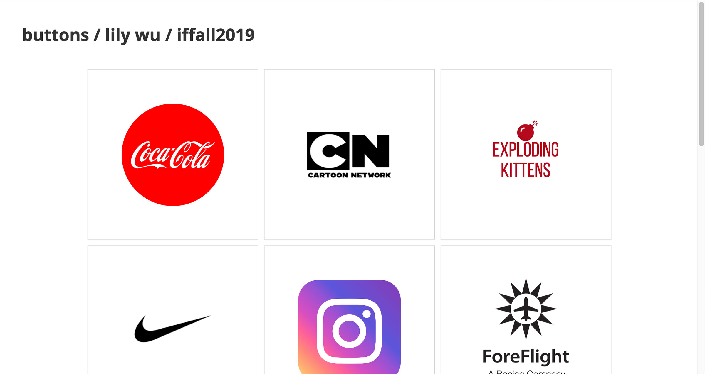
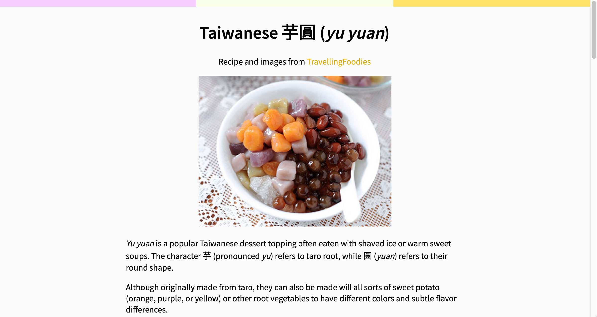
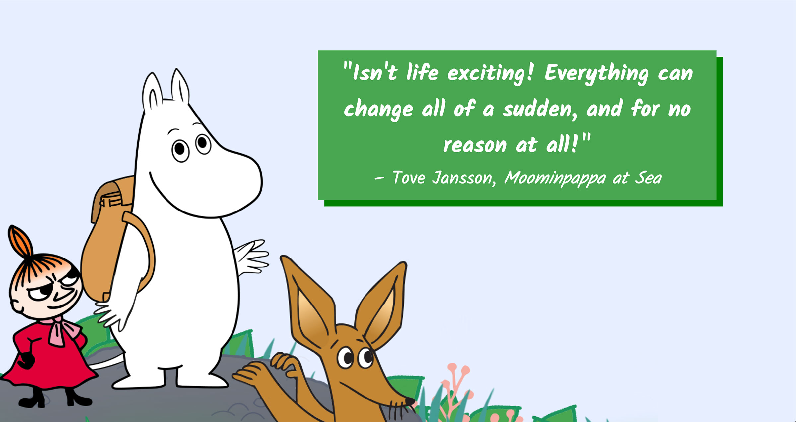
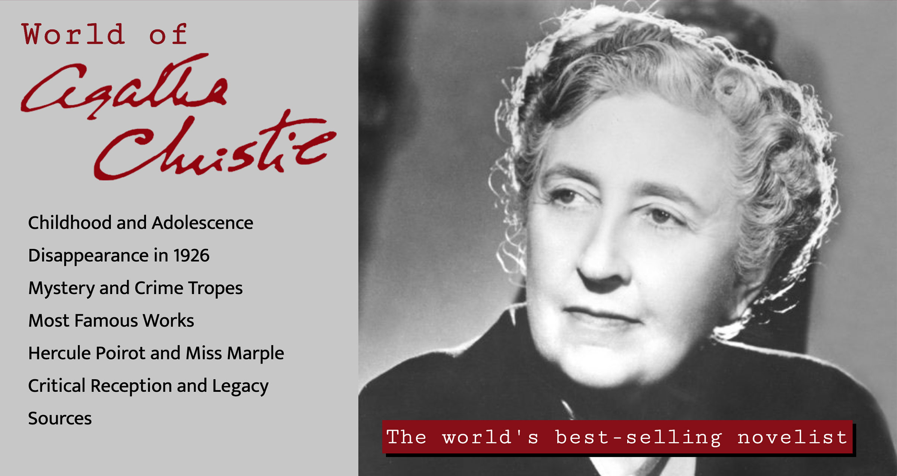

|  |
Out of the Clouds!A to-do app built with React with two sort functions. The initial version made with Javascript version is here. |
|  |
Cats * 12An interactive photo gallery using Javascript that allows the user to view larger versions of and click through images. |
|  |
Glico RedesignA redesign of the Ezaki Glico Group's global official site homepage. |
|  |
Taipei: A GuideA website introducing Taipei, Taiwan, and its various tourist sites. |